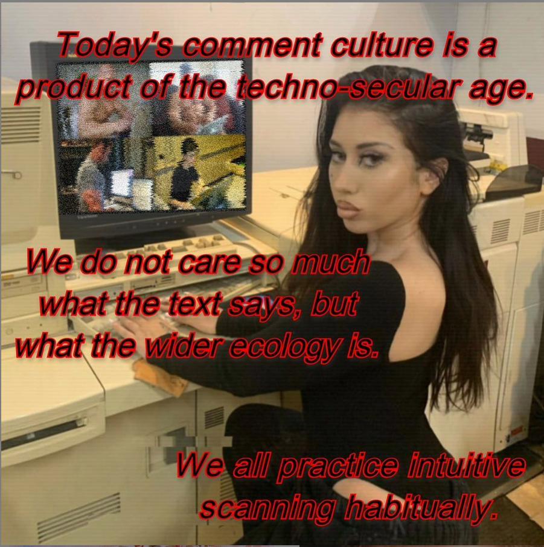
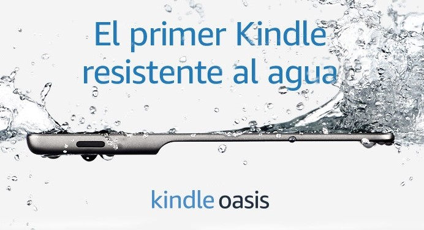
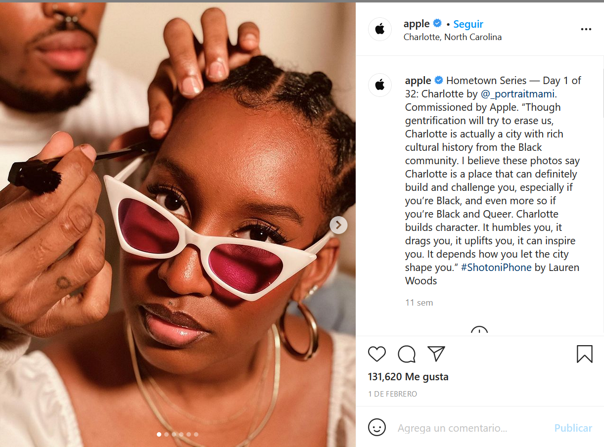
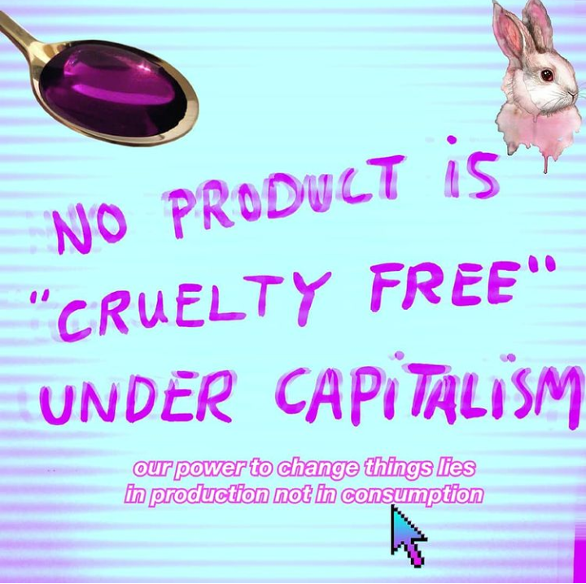

"Tienes un cuerpo potente, no te lo guardes para ti misma" -Paris Hilton (una sociedad que necesita mirar)

el capitalismo se extiende basado en dos premisas:

1) expandir necesidades a través de los objetos de consumo y 2) la misma re-ingeniería de los mismos
para que un objeto se vuelva consumo:

debe transformarse en signo, ya que los signos son la base simbólica de la cultura
el cuerpo, pensado desde el síndrome del artificio dentro de la sociedad del espectáculo, es un objeto legítimo de consumo
por lo anterior, los espacios públicos se transforman en pasarelas
pensar los cuerpos no-humanos desde una manera anti especista es la manera más ecológica de habitar

¿podemos co-habitar?
increíble que la construcción de nuestro bienestar (no sólo la salud, sino la comodidad de los cuerpos) está pensada desde la idea que se puede lograr sólo a través de la eliminación de otros cuerpos (no únicamente animales no humanos, sino también cuerpos disidentes)